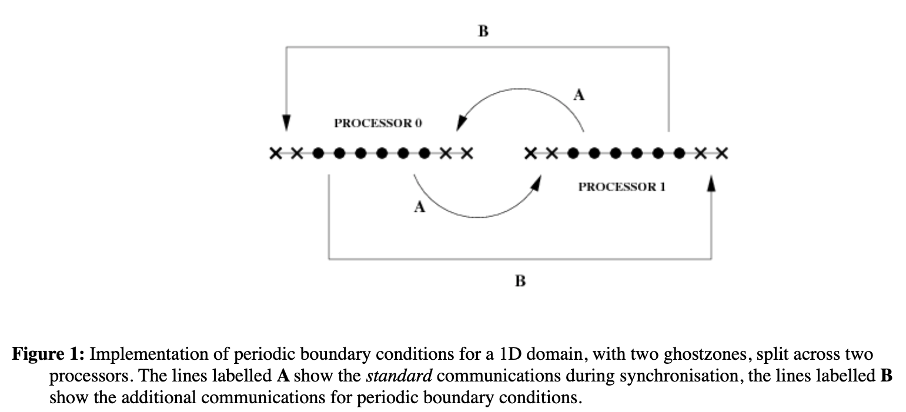

CactusPUGH¶
PUGH¶
This thorn provides a unigrid parallel driver with MPI.

Parameter¶
To set the size of the grid in each spatial direction use:
>>> PUGH::global_nsize = 40
To set the global size of a 2D grid to be 40×20 use:
>>> PUGH::global_nx = 40 >>> PUGH::global_ny = 20
The width of the ghost zone in each direction
>>> driver::ghost_size = 3
By default, no periodic boundary conditions are applied. To apply periodic boundary conditions in all directions, set
>>> PUGH::periodic = "yes"
PUGHSlab¶
Many I/O thorns output data from distributed CCTK array variables. If – in a multiprocessor run – output is done by only one processor, it needs to collect the data from the others. This ties the I/O thorn to the driver since it has to know about domain-decomposed data layout, interprocessor ghostzones, etc.